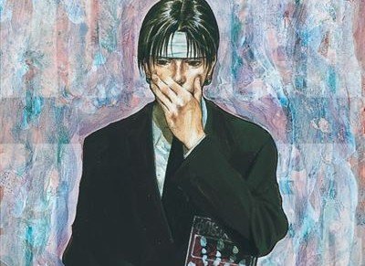
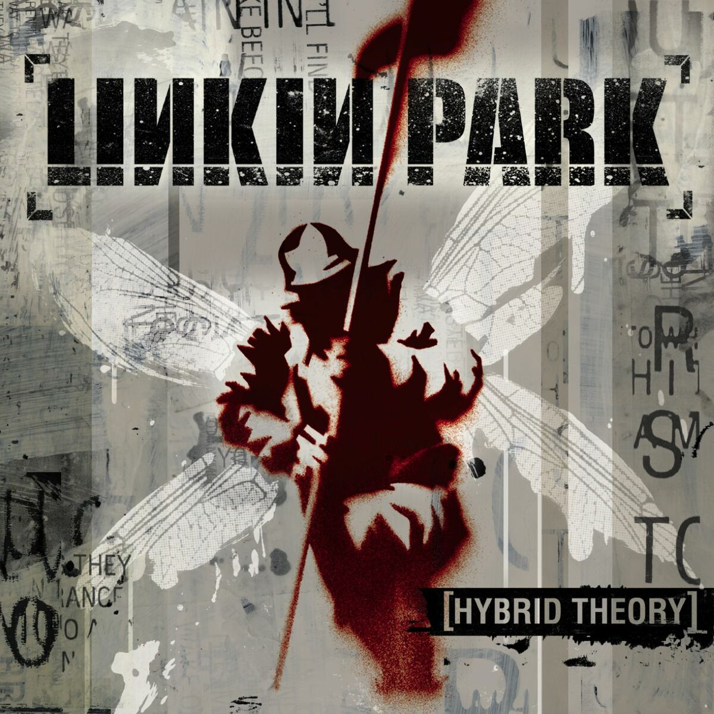
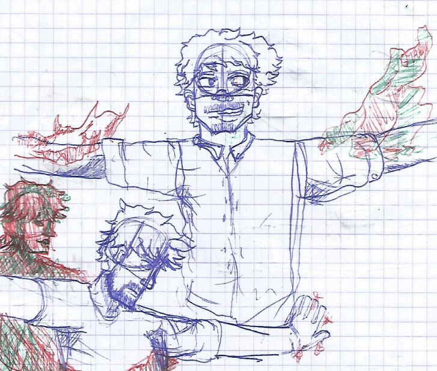

Infos sur moi
Je suis née le 24 septembre 2006. Un jour de plus et je serai née le même jours que Will Smith.(Quel Tristesse :[)
Qui suis-je ?
J'ai fait un Bac Technologique STMG au Lycée Grand Nouméa.
J'habite à Tamoa.
Dans mon temps libre, j’aime lire, dessiner et écouter de la musique.
Mes points forts
- J'ai un niveau B1 en Anglais
- J’ai les bases dans l’utilisation du logiciel Pack Office (Word, PowerPoint, Excel…).
- J’ai également quelques bases sur l’utilisation de Canva.
- J'ai que 261 points Pix.
- J'ai des bases en langage python.
- J'ai des bases en langage html et css.
- J'ai une certification Cisco sur "Les bases du matériel informatique".
Mes Loisirs

Lecture:
En ce moment, je lis beaucoup.
J’ai tendance à rester sur les mêmes genres, mais j’essaie de changer un peu.
J’aime lire des romans, des comics, des mangas, des bandes dessinées et des thrillers.
Je viens tout juste de me mettre à ce type de lectures.
Au début de l’année, j’ai rejoint le club lecture de mon lycée par simple curiosité,
et c’est grâce à lui que j’essaie maintenant de découvrir un maximum de genres différents.

Music:
Depuis tout petit, écouter de la musique fait partie de ce que je préfère.
J'écoute un peu de tout. De la pop, du rock, du rap, du reggae, du lofi, des musiques d'ambiances...
Bref j'écoute de tout, en se moment j'écoute des musiques pops et rocks des années 90s et 2000s.

Dessiner:
J'aime bien dessiner dans mon temp libre, même si j'avoue que mes dessin ne sont pas parfait.
Depuis un moment, j'ai repris une vieille habitude du collège qui est de dessiner.
Mes dessins sont très nul mais c'est surtout la sensation quand tu commences par faire un très
qui une minutes après peux devenir un truc cool voir complètement habsurbe selon l'humeurs.
Même si c'est nul et imparfait.
Attention je suis pas un artiste, je sais qu'un vrai pro en dessin verrai mes feuilles et les aurait déchirer parce que je dessine mal.